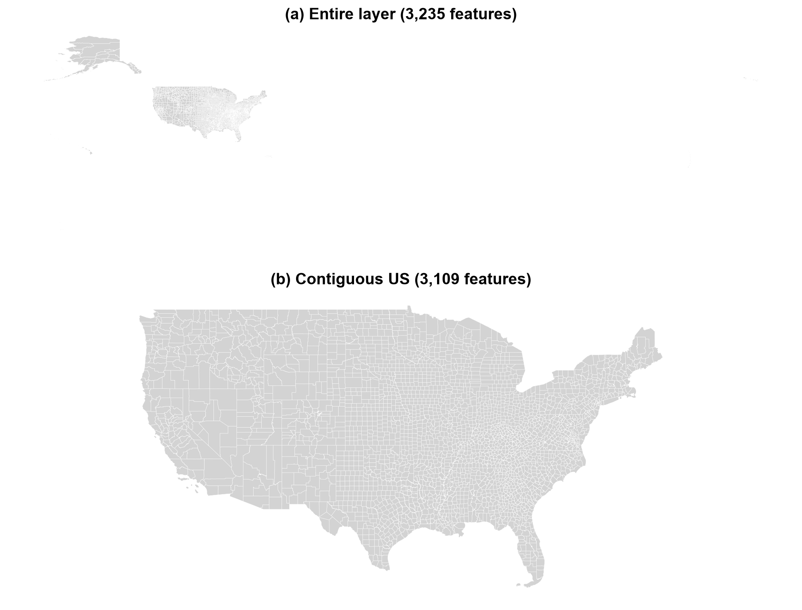
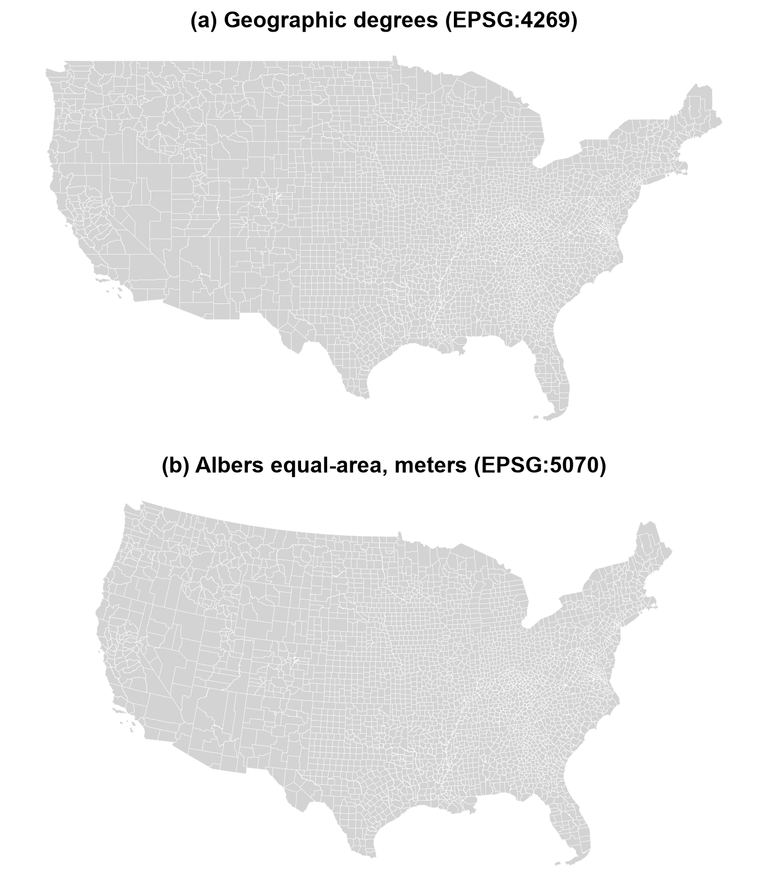
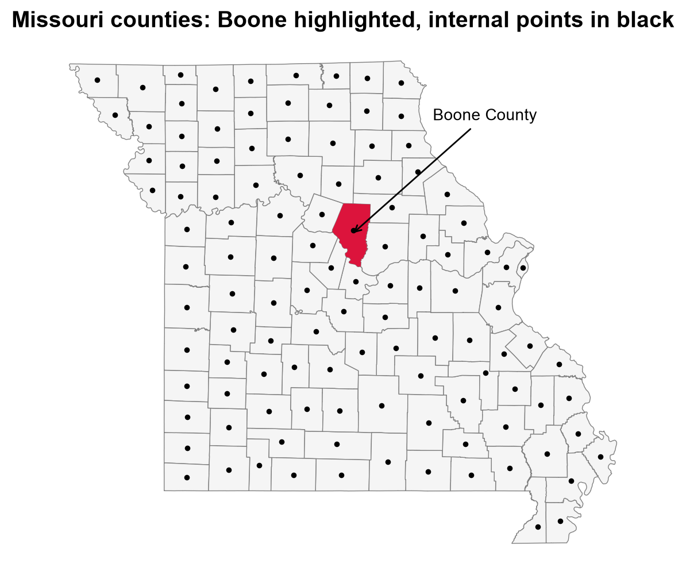

Remark
Please be aware that these lecture notes are accessible online in an ‘early access’ format. They are actively being developed, and certain sections will be further enriched to provide a comprehensive understanding of the subject matter.
3.2. The ESRI Shapefile#
3.2.1. Learning Objectives#
By the end of this section, you should be able to:
Explain what a Shapefile is, why it is a collection of files, and which components are mandatory.
Describe the role of each component (
.shp,.shx,.dbf,.prj,.cpg, and metadata files) and how geometry and attributes are linked.Download and unpack a real Shapefile and recognize what each unpacked file is.
Read a Shapefile in Python with GeoPandas, and with a low-level library when you only need to inspect it.
Recognize a multi-layer collection of Shapefiles.
Load a Shapefile with GeoPandas, filter and reproject it, map it, and write it back out to see the format’s limitations first-hand.
Identify the format’s core limitations (field-name length, size, null handling, single geometry type, text types and encoding), explain why they matter, and apply a checklist after reading or writing one.
Section Goal
The Shapefile was introduced by ESRI in the early 1990s and remains ubiquitous in GIS despite its age and many limitations. You will meet it constantly in government and institutional data. This section is a self-contained lecture on the format: we start with a real download, take its files apart, read it in Python, and then catalog the limitations so you know exactly what to check before trusting a Shapefile’s contents.
3.2.2. What Is a Shapefile, and Why Does It Still Matter?#
A Shapefile is a vector data format for storing the location and attributes of geographic features: points, lines, or polygons, each with a row of descriptive data. ESRI published its specification openly [ESRI, 1998], which allowed nearly every GIS tool to read and write it, and that openness is the main reason it became the default for exchanging vector data.
Its design reflects its era. It was built for desktop computers of the early 1990s: simple, fast to read, and split into several small files. That history explains both its strengths (universal support, easy to understand) and its weaknesses (the limits catalogued in Shapefile Format Limitations and Their Impacts). Today you will more often receive Shapefiles than choose them, so the practical skill is knowing how to read one safely.
3.2.3. Getting a Real Shapefile: US Census Counties#
To keep the discussion concrete, we use the TIGER/Line county boundaries published by the US Census Bureau [Natural Earth contributors, n.d.].
Browse the TIGER/Line Shapefiles page.
Download the national counties file: tl_2023_us_county.zip.
Unzip it into a folder of your own, for example
data/tl_2023_us_county/.
The resulting folder looks like this:
data/
tl_2023_us_county/
tl_2023_us_county.shp
tl_2023_us_county.shx
tl_2023_us_county.dbf
tl_2023_us_county.prj
tl_2023_us_county.cpg
tl_2023_us_county.shp.iso.xml
tl_2023_us_county.shp.ea.iso.xml
Notice that one dataset is seven files sharing a single base name. This is the first thing to understand about Shapefiles: when someone says “the Shapefile,” they mean the whole set.
Extension |
Content |
Status |
|---|---|---|
|
Geometry (binary) |
Mandatory |
|
Geometry index: fixed-size records pointing into |
Mandatory |
|
Attribute table (dBASE format) |
Mandatory |
|
Coordinate reference system, written as WKT text |
Optional, but essential in practice |
|
Character encoding declaration for the |
Optional, but strongly recommended |
|
Dataset-level metadata (ISO 19115 format): title, publisher, dates, purpose |
Optional |
|
Entity and attribute metadata: describes each field in the table |
Optional |
Three rules follow from this table:
The three mandatory files are
.shp,.shx, and.dbf. A Shapefile cannot be read without them..prjand.cpgare optional by specification but not optional in practice. Without.prj, you do not know where the coordinates are on Earth. Without.cpg, text with accents or non-Latin characters may be misread.All files must share the same base name and stay in the same folder. Moving or renaming only the
.shpbreaks the dataset. Always copy, zip, and email the full set.
The two .xml files are metadata written by the publisher. They are easy to ignore, but they are where you find the data’s lineage and field definitions, the kind of documentation discussed in the later section on data sources.
The next cell does the downloading and unpacking in Python, so the notebook can be rerun on any machine. It downloads the archive only if the Shapefile is not already on disk, then lists what was unpacked, with each file’s size and whether it is mandatory.
Contents of data/tl_2023_us_county/
tl_2023_us_county.cpg 0.00 MB optional
tl_2023_us_county.dbf 0.99 MB mandatory
tl_2023_us_county.prj 0.00 MB optional
tl_2023_us_county.shp 131.40 MB mandatory
tl_2023_us_county.shp.ea.iso.xml 0.04 MB optional
tl_2023_us_county.shp.iso.xml 0.05 MB optional
tl_2023_us_county.shx 0.03 MB mandatory
One dataset, seven files, and almost all of the weight is in the geometry: the .shp is 131 MB, while the .dbf is under 1 MB and the .shx index only 0.03 MB, because it stores nothing but fixed-size pointers. The .prj and .cpg are a few bytes each, yet losing either would leave the coordinates or the text uninterpretable.
3.2.4. Anatomy: What Each Component Does#
3.2.4.1. .shp, .shx, and .dbf: Three Files, One Table#
The Shapefile stores geometry and attributes separately, and links them by position:
.shpholds the shapes, one record per feature, in order..dbfholds one row per feature, in the same order..shxis an index into.shpthat lets software jump directly to the n-th shape without scanning from the start.
So the 1st shape in .shp belongs to the 1st row in .dbf, the 2nd to the 2nd, and so on. There is no key column joining them. The consequence is practical: never sort, delete, or edit the .dbf on its own (for example by opening it in a spreadsheet and saving it). Doing so scrambles the match between shapes and their attributes without any error message.
When GeoPandas reads the set, it joins the two sides for you and gives a single table where each row has its attributes plus a geometry column.
3.2.4.2. .prj: The Coordinate Reference System#
The .prj file describes the coordinate system in WKT (Well-Known Text), the same text notation family used for geometries. The TIGER/Line counties are in NAD83 geographic coordinates (EPSG:4269): longitude and latitude in degrees. This is close to, but not the same as, the WGS 84 system (EPSG:4326) used by GPS and web maps. The two differ by a small datum shift, which is why you should read the CRS from the data rather than assume. And because coordinates are degrees, distance or area computed directly on this layer is not in meters; reproject to a suitable projected CRS before measuring.
3.2.4.3. .cpg: Text Encoding#
The .dbf stores text as bytes, and the .cpg states which character set those bytes use (commonly UTF-8). If it is missing or wrong, names such as “Doña Ana” can appear corrupted. When text looks garbled, suspect the encoding first.
3.2.4.4. Geometry Types in a Shapefile#
A Shapefile holds exactly one geometry type: points, lines, or polygons (with variants for multipoints and for 3D or measured coordinates). Two details are worth knowing:
Shapefile “lines” and “polygons” can contain multiple parts. A county made of separate pieces is still one record. When read into Python, the result may contain a mix of
PolygonandMultiPolygonobjects even though the file has just one “polygon” type. This is the same distinction that matters when loading into a spatial database.A single file cannot mix types. A dataset that logically needs points and polygons must be delivered as separate files.
3.2.4.5. Collections of Shapefiles (Multi-Layer Datasets)#
Because one file holds one geometry type and one theme, datasets with several layers are delivered as a folder of several Shapefiles, each its own set of files with its own base name. Each Shapefile in the folder is a layer. For example, the Natural Earth cultural data [Natural Earth contributors, 2026] is published as separate downloads such as countries and states/provinces; unzipped into one folder, each becomes a layer you can list and open separately. This is a first glimpse of the “multi-layer container” idea that newer formats such as GeoPackage handle inside a single file.
3.2.5. Reading Shapefiles in Python#
3.2.5.1. High-Level Access with GeoPandas#
GeoPandas [Jordahl et al., 2020] is the right default for analysis. You give its read_file function the path to the .shp (for example, data/tl_2023_us_county/tl_2023_us_county.shp), and it finds the companion files by their shared base name, reads them as a set, and returns a GeoDataFrame: a table with one row per county and a geometry column.
3,235 features, 19 columns (including geometry)
| STATEFP | COUNTYFP | COUNTYNS | GEOID | GEOIDFQ | NAME | NAMELSAD | LSAD | CLASSFP | MTFCC | CSAFP | CBSAFP | METDIVFP | FUNCSTAT | ALAND | AWATER | INTPTLAT | INTPTLON | geometry | |
|---|---|---|---|---|---|---|---|---|---|---|---|---|---|---|---|---|---|---|---|
| 0 | 31 | 039 | 00835841 | 31039 | 0500000US31039 | Cuming | Cuming County | 06 | H1 | G4020 | NaN | NaN | NaN | A | 1477563029 | 10772508 | +41.9158651 | -096.7885168 | POLYGON ((-96.55516 41.91587, -96.55515 41.914... |
| 1 | 53 | 069 | 01513275 | 53069 | 0500000US53069 | Wahkiakum | Wahkiakum County | 06 | H1 | G4020 | NaN | NaN | NaN | A | 680980771 | 61564427 | +46.2946377 | -123.4244583 | POLYGON ((-123.72755 46.2645, -123.72756 46.26... |
| 2 | 35 | 011 | 00933054 | 35011 | 0500000US35011 | De Baca | De Baca County | 06 | H1 | G4020 | NaN | NaN | NaN | A | 6016818946 | 29090018 | +34.3592729 | -104.3686961 | POLYGON ((-104.89337 34.08894, -104.89337 34.0... |
| 3 | 31 | 109 | 00835876 | 31109 | 0500000US31109 | Lancaster | Lancaster County | 06 | H1 | G4020 | 339 | 30700 | NaN | A | 2169269688 | 22850324 | +40.7835474 | -096.6886584 | POLYGON ((-96.68493 40.5233, -96.69219 40.5231... |
| 4 | 31 | 129 | 00835886 | 31129 | 0500000US31129 | Nuckolls | Nuckolls County | 06 | H1 | G4020 | NaN | NaN | NaN | A | 1489645187 | 1718484 | +40.1764918 | -098.0468422 | POLYGON ((-98.2737 40.1184, -98.27374 40.1224,... |
The layer has 3,235 rows, one for each county or county equivalent, and 19 columns: the 18 .dbf fields plus the geometry built from the .shp. The fields include (among others):
Field |
Meaning |
Example |
|---|---|---|
|
State FIPS code |
|
|
County FIPS code within the state |
|
|
State plus county code, a unique ID |
|
|
County name; name with legal/statistical description |
Boone; Boone County |
|
Land and water area, in square meters |
numeric |
|
Internal point (representative location) |
text |
|
The county’s polygon |
|
Two lessons are hidden in this table:
Codes are text, not numbers. FIPS codes like
019have leading zeros. Stored as numbers they would become19and joins to other datasets would fail. The Census Bureau stores them as text, and so should you.Field names are 10 characters or fewer.
NAMELSAD,INTPTLAT, andCOUNTYNSall fit. Careful publishers design names to fit this limit; Shapefile Format Limitations and Their Impacts explains why.
The next cell checks both lessons directly. It shows how the codes are stored, and why GEOID, not NAME, is the key: several states have a Boone County.
STATEFP str
COUNTYFP str
GEOID str
dtype: object
As text : ['039', '069', '011']
As number: [39, 69, 11]
NAME is unique : False
GEOID is unique: True
| STATEFP | COUNTYFP | GEOID | NAME | NAMELSAD | |
|---|---|---|---|---|---|
| 329 | 54 | 005 | 54005 | Boone | Boone County |
| 507 | 29 | 019 | 29019 | Boone | Boone County |
| 1252 | 31 | 011 | 31011 | Boone | Boone County |
| 1573 | 21 | 015 | 21015 | Boone | Boone County |
| 1742 | 05 | 009 | 05009 | Boone | Boone County |
| 1954 | 17 | 007 | 17007 | Boone | Boone County |
| 1985 | 19 | 015 | 19015 | Boone | Boone County |
| 2155 | 18 | 011 | 18011 | Boone | Boone County |
Eight states have a Boone County, so NAME cannot serve as a key (False), while GEOID, which prefixes the state code, is unique. The cast to a number turns '039' into 39: the leading zero is lost, and joins against datasets that keep codes as text would silently fail.
3.2.5.2. Reading Only Part of a File#
You can also read only part of a file, such as selected columns, a row range, or only features inside a bounding box. For a large national layer, this is much faster than loading everything.
All columns : 19 Selected columns : 4
All rows : 3,235 Missouri : 115 Bounding box : 13 First rows : 5
Filtering at read time returns only what was requested: four of the 19 columns, the 115 Missouri features (114 counties plus St. Louis city), the 13 counties that intersect the box around Columbia, and the first five rows.
3.2.5.3. Seeing the Position Link#
Recall that the .shp and .dbf are matched by position, with no key joining them. The next cell shows what that means by shuffling the attribute rows and reattaching them to the unchanged geometries. Nothing fails; every row still looks fine. But the names no longer belong to their shapes.
| correct name | name after shuffle | |
|---|---|---|
| 0 | Cuming | Oconto |
| 1 | Wahkiakum | Wabasha |
| 2 | De Baca | Forsyth |
| 3 | Lancaster | Sargent |
| 4 | Nuckolls | Fairfield |
Cuming County’s polygon now carries the name Oconto, Wahkiakum’s carries Wabasha, and so on. Every row is individually plausible and no error is raised, which is why the .dbf must never be edited or re-sorted separately from the .shp.
3.2.5.4. Low-Level Access: Inspect Before You Load#
Libraries such as Fiona (and pyogrio, which recent GeoPandas versions use by default) provide direct access to the same files. A low-level view is useful when you want to:
list the layers in a folder before choosing one;
check metadata (driver, CRS, schema, feature count) without reading all geometry; or
stream a very large file one feature at a time instead of holding it all in memory.
Layers in the folder: [['tl_2023_us_county', 'Polygon']]
Driver : ESRI Shapefile
CRS : EPSG:4269
Features : 3,235
Geometry : Polygon
Encoding : UTF-8
Fields : ['STATEFP', 'COUNTYFP', 'COUNTYNS', 'GEOID', 'GEOIDFQ', 'NAME', 'NAMELSAD', 'LSAD', 'CLASSFP', 'MTFCC', 'CSAFP', 'CBSAFP', 'METDIVFP', 'FUNCSTAT', 'ALAND', 'AWATER', 'INTPTLAT', 'INTPTLON']
Fiona sees: ESRI Shapefile EPSG:4269 3,235 features
Geometry types in the file: {'Polygon': 3182, 'MultiPolygon': 53}
pyogrio and Fiona agree: EPSG:4269, 3,235 features, and UTF-8 text encoding read from the .cpg. The geometry counts show the multi-part point from earlier: although the layer is reported as Polygon, 53 of its features are MultiPolygon, because the single Shapefile polygon type holds both.
Task |
Use |
|---|---|
Quick look at CRS, schema, and feature count; list layers |
Low-level library (Fiona / pyogrio) |
Stream a file too big for memory |
Low-level library |
Filter, join, plot, reproject, export as a table |
GeoPandas |
The usual workflow is to inspect first (what is in this folder, what CRS, how many features, which fields) and then load with GeoPandas once you know what you are getting.
3.2.6. Exploring and Visualizing a Shapefile#
Reading a file is only the beginning. Maps are the fastest way to find problems and to see patterns, so we now look at the data we loaded.
3.2.6.1. Look Before You Analyze#
The layer holds every county and county equivalent, including Alaska, Hawaii, and the island territories. Because some territories lie on opposite sides of the 180° meridian, a default map of the whole layer is stretched across the globe. A first plot like this is a quality check: it immediately shows scope and extent. Filtering on STATEFP gives us the contiguous United States.
3,235 features in the layer, 3,109 in the contiguous US


Fig. 3.5 The entire counties layer (a) and the contiguous United States after filtering on STATEFP (b).#
Fig. 3.5 shows the scope check at work. In panel (a) the mainland is a small block in the upper left, because the westernmost Aleutian Islands and the Pacific territories lie in the Eastern Hemisphere and stretch the plot extent across nearly the whole globe. Removing seven state codes (126 features) gives the usable map in panel (b). The same filter-then-plot habit applies to any layer with outlying features.
3.2.6.2. Reproject Before You Measure#
The layer is in NAD83 degrees. Degrees are angles, not lengths, so a one-degree square covers far less ground near the poles than at the equator. For maps and measurements of the contiguous US, an equal-area projection [Snyder, 1987] such as NAD83 / Conus Albers (EPSG:5070) is a better choice: it preserves areas and uses meters.
The first cell compares the two maps. The second shows the measurement consequence: area computed directly on the degree-based geometry is in square degrees, which is not a usable area, while the projected area should agree closely with the Census Bureau’s own ALAND + AWATER fields.
CRS: EPSG:4269 -> EPSG:5070


Fig. 3.6 Contiguous US counties in geographic degrees (a) and in the Albers equal-area projection (b).#
The two maps in Fig. 3.6 hold the same data and differ only in CRS. In degrees (a), longitude and latitude are drawn as a flat grid, so the northern border is a straight line and the country looks stretched sideways. In the Albers projection (b), the border curves and the familiar shape appears, with areas preserved so that counties can be compared fairly.
| STATEFP | NAME | area in degrees^2 (not an area) | projected area (km2) | ALAND + AWATER (km2) | |
|---|---|---|---|---|---|
| 507 | 29 | Boone | 0.186 | 1789.8 | 1789.8 |
Projected area / reported area (should be close to 1):
count 3109.0
mean 1.0
std 0.0
min 1.0
25% 1.0
50% 1.0
75% 1.0
max 1.0
dtype: float64
For Boone County, the projected area (1,789.8 km²) matches the Census Bureau’s own ALAND + AWATER figure, while the same geometry in degrees gives 0.186, which is square degrees, not an area. Across all 3,109 contiguous counties the ratio of projected to reported area is 1.0 to four decimals, so the projection and the published figures agree.

3.2.6.4. Zooming In: Missouri and Boone County#
Filtering to one state shows how attribute filtering and drawing work together. Missouri has 114 counties plus the independent city of St. Louis. The cell below highlights Boone County and overlays every county’s internal point.
INTPTLAT and INTPTLON are stored as text, so we convert them to numbers and build point geometries from them. This is a small example of constructing geometry from coordinate columns, a task you will meet often with tabular data.
115 Missouri features, 115 internal points built from text columns


Fig. 3.8 Missouri counties with Boone County highlighted and each county’s internal point in black.#
Boone County sits in the middle of the state in Fig. 3.8. Each county has exactly one black dot, and every dot falls inside its own polygon. That is a useful check on the conversion: had the text columns been misread, or longitude and latitude swapped, dots would land outside the state.
3.2.6.5. Ranking and Summarizing#
Because the layer is a table, ordinary table operations apply. Sorting by land area, for example, shows which counties are largest. The area fields are in square meters, so we convert to square kilometers first.
| STATEFP | NAME | NAMELSAD | land_km2 | |
|---|---|---|---|---|
| 520 | 02 | Yukon-Koyukuk | Yukon-Koyukuk Census Area | 377055.0 |
| 2246 | 02 | North Slope | North Slope Borough | 230052.0 |
| 1511 | 02 | Bethel | Bethel Census Area | 105253.0 |
| 242 | 02 | Northwest Arctic | Northwest Arctic Borough | 92367.0 |
| 1276 | 02 | Southeast Fairbanks | Southeast Fairbanks Census Area | 64315.0 |
All five largest counties are Alaskan boroughs or census areas, a reminder that “county equivalents” differ widely in kind and size. Rankings and averages over the whole layer therefore mix unlike units.
3.2.7. Putting It Together: A Safe Reading Routine#
After reading any Shapefile, run a short set of checks before analysis:
Check |
What it tells you |
In the counties example |
|---|---|---|
Feature count |
Whether the data loaded completely |
Roughly 3,200 counties |
Field names and types |
Truncation; codes stored as numbers |
|
CRS |
Where coordinates are, and in what units |
NAD83 degrees (EPSG:4269) |
Geometry types |
Single or mixed Polygon/MultiPolygon |
Both may appear |
Null or invalid geometries |
Records that will break spatial operations |
Should be none or few |
Encoding |
Whether text reads correctly |
Names with accents look right |
Making this routine a habit pays off whenever a Shapefile arrives from an unfamiliar source.
The function below turns this table into a reusable audit. Run it immediately after every read, before any analysis.
Feature count : 3,235
Fields : 18 (longest name: 8 characters)
Text fields : 16 of 18
CRS : EPSG:4269
Geometry types : {'Polygon': 3182, 'MultiPolygon': 53}
Null geometries : 0
Empty geometries : 0
Invalid geometries : 0
Encoding (.cpg) : UTF-8
GEOID is unique : True
GEOID is 5 chars : True
Non-ASCII names : ['Mayagüez', 'Canóvanas', 'Guánica', 'Doña Ana', 'Peñuelas']
The audit is clean: no null, empty, or invalid geometries; 18 fields with a longest name of 8 characters, inside the 10-character limit; EPSG:4269; and a UTF-8 .cpg. Names such as Doña Ana and Mayagüez read correctly, which confirms the encoding. A clean audit is evidence that the file is well formed, not proof that positions are accurate or attributes current.
3.2.8. Key Limitations#
Most Shapefile problems are silent: the file opens, the map draws, and the error is still there. Know the limits and what each one does:
Limitation |
What happens |
Why it matters |
|---|---|---|
10-character field names |
Longer names are truncated when writing |
Information is lost, and two long names can collapse into the same short one |
2 GB limit per component ( |
Large datasets cannot be stored in one Shapefile |
Big layers must be split or stored in another format |
No reliable null for numbers |
Writers substitute zero or another placeholder |
A real zero and a missing value become indistinguishable |
One geometry type per file |
Mixed data needs several files |
Datasets turn into folders of files |
Date only, no time |
Timestamps cannot be stored in a date field |
Time of day must be stored as text or in extra fields |
Limited text and number types |
Text fields are capped at 254 characters; few data types |
Long descriptions get cut off |
Weak Unicode handling |
Special characters corrupt without a correct |
Names and places appear garbled |
Multi-file fragility |
Components separate or get renamed |
A missing |
3.2.8.1. Worked Example: Field-Name Truncation#
Suppose a table has a column called CrimeDescriptionAndLocation. That name is 27 characters long. When written to a Shapefile, it is silently cut to its first 10 characters, CrimeDescr, with no error (GeoPandas prints a warning that is easy to miss, and other tools may say nothing). If the table also has CrimeDescriptionOnly, both names now begin CrimeDescr, and the writer must invent a new name for one of them; GDAL produces CrimeDes_1 [GDAL/OGR contributors, 2026]. The lesson is to choose short, meaningful field names before exporting, and always reopen the written file and compare field names against the original.
The next cell writes a small table to a Shapefile and reads it back. Besides the field names, it includes a 300-character text value and a timestamp, so you can see two more limits at work.
Writing the Shapefile...
warning: Column names longer than 10 characters will be truncated when saved to ESRI Shapefile.
warning: Normalized/laundered field name: 'CrimeDescriptionAndLocation' to 'CrimeDescr'
warning: Normalized/laundered field name: 'CrimeDescriptionOnly' to 'CrimeDes_1'
warning: Field ReportedAt created as String field, though DateTime requested.
warning: Value 'long note long note long note long note long note long note long note long note long not
Field names before: ['CrimeDescriptionAndLocation', 'CrimeDescriptionOnly', 'Notes', 'ReportedAt']
Field names after : ['CrimeDescr', 'CrimeDes_1', 'Notes', 'ReportedAt']
Text length before/after: 300 -> 254
Timestamp before/after : 2026-10-16 14:30:00 -> 2026/10/16 14:30:00 (stored as str)
One write caused four silent losses. Both long column names were cut to ten characters and, because they began alike, the second received a _1 suffix to stay unique. The 300-character note was cut to 254. The timestamp came back as the string 2026/10/16 14:30:00, because the DBF has a date type but no time of day. Warnings were raised, but nothing failed, which is why reopening the written file matters.
A single Shapefile also cannot hold mixed geometry types. Trying to write a point and a polygon into the same file fails:
FeatureError: Could not add feature to layer at index 1: Attempt to write non-point (POLYGON) geometry to point shapefile.
Unlike the losses above, this limit is enforced with an explicit error.
3.2.8.2. Living with the Format#
Despite these limitations, Shapefile remains the format you are most likely to receive from government agencies, so working with its constraints is indispensable. A sensible policy:
Receiving: read it, run the checks in Safe Reading Routine Checks for Shapefiles, and keep the original untouched.
Working: for repeated analysis, convert to a modern format that removes most of these limits (the next section introduces one).
Delivering: provide Shapefile only when the recipient requires it, with short field names, a
.prj, and a.cpg, and verify the output by reading it back.
To see the difference, the cell below writes the same Missouri table to both formats. It adds one column with a long, descriptive name, then compares the files produced and the field names that survive.
Writing the Shapefile...
warning: Column names longer than 10 characters will be truncated when saved to ESRI Shapefile.
warning: Normalized/laundered field name: 'land_area_square_meters' to 'land_area_'
Shapefile files : ['missouri.cpg', 'missouri.dbf', 'missouri.prj', 'missouri.shp', 'missouri.shx']
Shapefile fields: ['NAME', 'land_area_']
GeoPackage files : ['missouri.gpkg']
GeoPackage fields: ['NAME', 'land_area_square_meters']
The Shapefile shortened land_area_square_meters to land_area_ and produced five files, while the GeoPackage kept the full name in a single file.
Practice
Download and unzip tl_2023_us_county.zip into data/tl_2023_us_county/. List the files, mark which are mandatory, and read the layer with GeoPandas. Then record the feature count, CRS, geometry types, and field names, and note which field would break if it were treated as a number. Then pick a state other than Missouri, map its counties colored by land area, and save the result as a GeoPackage.
3.2.9. Key Terms#
Term |
Meaning |
|---|---|
Shapefile |
A multi-file vector format from ESRI storing geometry and attributes. |
|
The three mandatory files: geometry, geometry index, attribute table. |
|
File holding the coordinate reference system in WKT. |
|
File declaring the text encoding of the attribute table. |
dBASE (DBF) |
The legacy table format used for Shapefile attributes. |
Layer |
One Shapefile in a folder of several; one geometry type and theme. |
FIPS code |
A numeric-looking standard identifier for states and counties, best stored as text. |
NAD83 (EPSG:4269) |
The geographic coordinate system used by TIGER/Line data. |
Truncation |
Silent cutting of a field name beyond 10 characters. |
3.2.10. Review Questions#
Which three files must exist for a Shapefile to be readable, and what does each hold?
How are geometries in the
.shplinked to rows in the.dbf, and why is editing the.dbfalone dangerous?The
.prjof the counties layer says NAD83 degrees. What does that imply for computing county areas directly from the geometry?Why should
COUNTYFPandGEOIDbe stored as text?A field named
PopulationEstimate2020is exported to a Shapefile. What happens, and how would you detect it?When would you inspect a Shapefile with a low-level library instead of loading it with GeoPandas?
3.2.11. Summary#
A Shapefile is a set of files that must stay together: .shp, .shx, and .dbf are mandatory, and .prj and .cpg (plus metadata XML) are optional by specification but essential in practice. Geometry and attributes are stored separately and matched by position. The format’s single-geometry-type rule, 10-character field names, 2 GB limit, weak null and text handling, and fragility as a multi-file bundle trace back to the 1990s, and they can silently corrupt data if unchecked. GeoPandas is the practical default for analysis, while low-level libraries support inspection and streaming. Because Shapefile remains common in legacy and government data, always re-verify field names, geometry, CRS, and encoding immediately after reading one.
The next section introduces two modern, multi-layer alternatives that remove most of these limitations: GeoPackage and the Esri File Geodatabase.